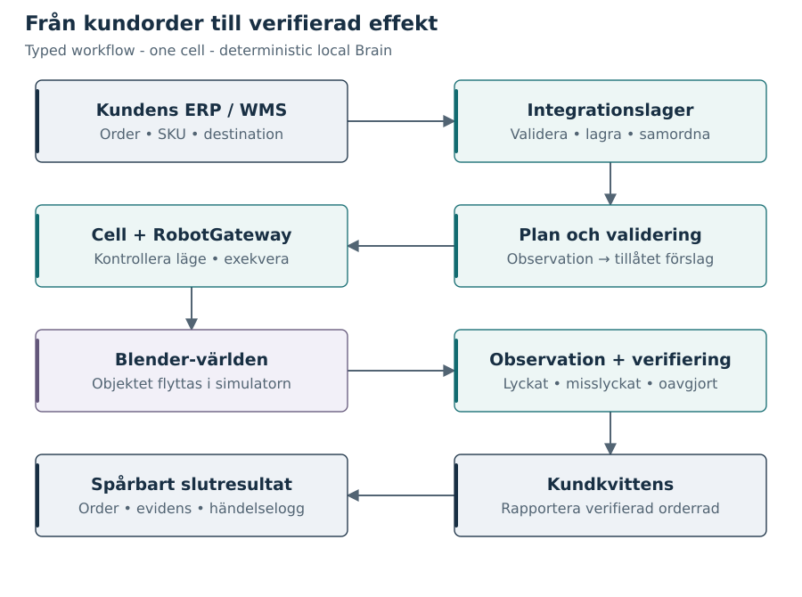

Öppna en figur i storlek som passar skärmen, eller ladda ned dess redigerbara källa. SVG-filerna är också inbäddade som vektorgrafik i PDF-rapporterna.

Figur 1. Egen konceptmodell. Ett plock passerar flera ansvar; kundstatus ändras först efter observerad effekt och hanterad kvittens. Pilarna visar informations- och exekveringsflöde, inte verkliga SICS-gränssnitt.
Figure 2. SIMULATOR_DESIGN architecture; revision-specific acceptance is stated separately. The durable workflow validates observed plans and preserves original command identity. The bounded Blender runtime owns private world/tool state and controller checkpoints. ObservationModel alone converts world data into WorldObservation with explicit sensor and simulated telemetry provenance; Verifier has no direct world path. Tool preparation shares the product-transfer command and does not add a transfer effect. Replay reads versioned artifacts. The API cell registry initializes new tests; retained archives remain read-only. Confirmed deletion removes the test world and catalog entry after bounded cleanup; display numbers become reusable. Clear retains the same test identity/number/cell, replaces execution data with an empty scene and increments its revision before permitting new work. Only anonymous request digests remain after completed deletion. The UI drains its own pending replay and snapshot response bodies before confirmed management; controls and polling resume after final refresh. Backend response-lifetime and running-work guards remain enforced. Neither action dispatches a pick or assigns a verdict. Deleting the active test leaves no active world; explicitly clearing an archive activates only its restored world. Lost acknowledgement still requires original journal plus fresh sufficient observation, with no replacement pick. Investigation reads job-scoped persisted evidence independently of replay. Explicit re-observation alone invokes reconciliation; navigation and downloads do not mutate the world.
Figure 3. SIMULATOR_DESIGN. Only reconciliation evidence resolves an unknown effect. Timeout alone never proves failure. ERP exposes the verified business outcome. Explicit operator re-observation may return REQUIRES_INTERVENTION to RECONCILING using the same command and fresh evidence. It never dispatches another pick; restart leaves intervention paused (ADR 0008).
Figur 4. Egen sekvensmodell. Effekten uppstår före kommunikationsfelet. Integrationen begär kommandostatus och observation, inte ett nytt plock. Endast tillräcklig och konsistent evidens tillåter slutförande; annars krävs fortsatt utredning. Efter otillräcklig evidens kan operatören uttryckligen upprepa steg 6–9 för samma kommando. Varje bedömning sparas; ingen ny plockeffekt begärs. Verktygsförberedelse i HKM-revisionen hör till samma kommando och ändrar inte denna avstämningsregel.
Figure 5. SIMULATOR_DESIGN evidence boundary for the enhancement. ObservationModel derives configured sensor-like evidence from private WorldState; active-tool telemetry is explicitly SIMULATED_CELL_TELEMETRY, not computer vision. Noise, freshness, uncertainty and coverage affect the observation contract. Verifier receives observation and original command, never raw world or rendered pixels. The test oracle alone may compare hidden truth with a verdict. Public presentation cameras and replay do not prove business success.
Figur 6. Egen behörighetsmodell. Codex och MCP kan hjälpa till med scenförfattande i en isolerad utvecklingsmiljö. Granskade och versionshanterade artefakter förs sedan till körmiljön. RobotGateway accepterar enbart det avgränsade runtime-kontraktet.
Figur 7. Egen jämförelse. Kontrakt, identiteter, felhantering och observerbarhet kan studeras i båda miljöerna. Fysik, sensorer, säkerhet och driftsvillkor kräver ny validering vid övergång till verklig utrustning. Figuren beskriver ingen intern SICS-arkitektur.
Figure 8. SIMULATOR_DESIGN implemented cell; final acceptance status is stated separately. Six source families and interchangeable tools surround one original TCP-driven hybrid-inspired manipulator. The procedural enclosure, conveyor and logical interlocks illustrate context, not validated industrial safety. Public manufacturer reach metadata is separate from the smaller enforced synthetic workspace. Operator overview is presentation only; overhead/side observation metadata does not imply pixel-based computer vision.
Figure 9. SIMULATOR_DESIGN implemented execution sequence; final acceptance status is stated separately. A valid original PICK_AND_PLACE intent is durable before cell preparation. Selection and availability checks can reject before any transfer. If the active tool is correct, TOOL_CHANGE_NOT_REQUIRED is recorded and the preparation branch is bypassed. Otherwise dock, release/empty-flange, engagement/tool-ID and retreat events share the original command identity. Restart never treats a missing reply as permission for another pick.
Figure 10. SIMULATOR_DESIGN frame tree. Tool TCP transforms and camera/source/destination poses are explicit, versioned values. Parent frame labels do not assert calibrated correspondence to a real robot. Observation captures add UTC timestamps and model/sensor provenance. Browser camera selection is presentation only.
Figure 11. SIMULATOR_DESIGN compatibility matrix generated from robotops/robotics/catalogue-v1.json. P/C eligibility remains subject to actual fixture mass, geometry and tool availability. These are not manufacturer gripper specifications. The selected tool and candidate rejection reasons must be persisted separately as execution evidence.
Figure 12. The operator runs a scenario and follows the recorded result into a bounded investigation panel. Symptoms, record findings and possible explanations stay distinct. Evidence and manual inspection use the same test/job identity; the timeline is secondary. Return preserves replay context. Only explicit re-observation invokes existing original-command reconciliation; replay, tabs and downloads issue no pick. Browser automation checks function, not first-time usability.
Figure 13. Implemented Integration Lab topology, with acceptance tracked in the current report. The console sends explicit REST authorizations and reads a persisted WebSocket trace. PostgreSQL commits immutable command/outbox intent before RabbitMQ publication. The separate edge service commits its inbox before consumer ACK and owns real OPC UA sessions to the virtual PLC. Bounded API-to-edge REST control calls preserve guided gates. PLC acceptance alone cannot actuate the runtime: explicit physical authorization and the original durable execution claim are required. The PLC-to-runtime interface is simulated; the existing runtime is invoked by the shared bounded handler. Fresh synthetic observations and the verifier determine the outcome. WMS HTTP acknowledgement precedes committed ERP business completion. Lost replies cause original-identity reconciliation, never an automatic replacement pick. This does not claim safety certification or exactly-once physical execution.

![Systemgränser och ägarskap. Figure 2. SIMULATOR_DESIGN architecture; revision-specific acceptance is stated separately. The durable workflow validates observed plans and preserves original command identity. The bounded Blender runtime owns private world/tool state and controller checkpoints. ObservationModel alone converts world data into WorldObservation with explicit sensor and simulated telemetry provenance; Verifier has no direct world path. Tool preparation shares the product-transfer command and does not add a transfer effect. Replay reads versioned artifacts. The API cell registry initializes new tests; retained archives remain read-only. Confirmed deletion removes the test world and catalog entry after bounded cleanup; display numbers become reusable. Clear retains the same test identity/number/cell, replaces execution data with an empty scene and increments its revision before permitting new work. Only anonymous request digests remain after completed deletion. The UI drains its own pending replay and snapshot response bodies before confirmed management; controls and polling resume after final refresh. Backend response-lifetime and running-work guards remain enforced. Neither action dispatches a pick or assigns a verdict. Deleting the active test leaves no active world; explicitly clearing an archive activates only its restored world. Lost acknowledgement still requires original journal plus fresh sufficient observation, with no replacement pick. Investigation reads job-scoped persisted evidence independently of replay. Explicit re-observation alone invokes reconciliation; navigation and downloads do not mutate the world.](assets/architecture.svg)

![Utfört plock — förlorad kvittens. Figur 4. Egen sekvensmodell. Effekten uppstår före kommunikationsfelet. Integrationen begär kommandostatus och observation, inte ett nytt plock. Endast tillräcklig och konsistent evidens tillåter slutförande; annars krävs fortsatt utredning. Efter otillräcklig evidens kan operatören uttryckligen upprepa steg 6–9 för samma kommando. Varje bedömning sparas; ingen ny plockeffekt begärs. Verktygsförberedelse i HKM-revisionen hör till samma kommando och ändrar inte denna avstämningsregel.](assets/ack-loss.svg)
![Verklighet, observation, mål och förslag. Figure 5. SIMULATOR_DESIGN evidence boundary for the enhancement. ObservationModel derives configured sensor-like evidence from private WorldState; active-tool telemetry is explicitly SIMULATED_CELL_TELEMETRY, not computer vision. Noise, freshness, uncertainty and coverage affect the observation contract. Verifier receives observation and original command, never raw world or rendered pixels. The test oracle alone may compare hidden truth with a verdict. Public presentation cameras and replay do not prove business success.](assets/worlds.svg)


![HKM-inspired warehouse cell. Figure 8. SIMULATOR_DESIGN implemented cell; final acceptance status is stated separately. Six source families and interchangeable tools surround one original TCP-driven hybrid-inspired manipulator. The procedural enclosure, conveyor and logical interlocks illustrate context, not validated industrial safety. Public manufacturer reach metadata is separate from the smaller enforced synthetic workspace. Operator overview is presentation only; overhead/side observation metadata does not imply pixel-based computer vision.](assets/hkm-cell.svg)
![Tool preparation under the original command. Figure 9. SIMULATOR_DESIGN implemented execution sequence; final acceptance status is stated separately. A valid original PICK_AND_PLACE intent is durable before cell preparation. Selection and availability checks can reject before any transfer. If the active tool is correct, TOOL_CHANGE_NOT_REQUIRED is recorded and the preparation branch is bypassed. Otherwise dock, release/empty-flange, engagement/tool-ID and retreat events share the original command identity. Restart never treats a missing reply as permission for another pick.](assets/tool-preparation.svg)


![Run, notice and investigate. Figure 12. The operator runs a scenario and follows the recorded result into a bounded investigation panel. Symptoms, record findings and possible explanations stay distinct. Evidence and manual inspection use the same test/job identity; the timeline is secondary. Return preserves replay context. Only explicit re-observation invokes existing original-command reconciliation; replay, tabs and downloads issue no pick. Browser automation checks function, not first-time usability.](assets/investigation.svg)
![Integration Lab: explicit boundaries. Figure 13. Implemented Integration Lab topology, with acceptance tracked in the current report. The console sends explicit REST authorizations and reads a persisted WebSocket trace. PostgreSQL commits immutable command/outbox intent before RabbitMQ publication. The separate edge service commits its inbox before consumer ACK and owns real OPC UA sessions to the virtual PLC. Bounded API-to-edge REST control calls preserve guided gates. PLC acceptance alone cannot actuate the runtime: explicit physical authorization and the original durable execution claim are required. The PLC-to-runtime interface is simulated; the existing runtime is invoked by the shared bounded handler. Fresh synthetic observations and the verifier determine the outcome. WMS HTTP acknowledgement precedes committed ERP business completion. Lost replies cause original-identity reconciliation, never an automatic replacement pick. This does not claim safety certification or exactly-once physical execution.](assets/integration-lab.svg)